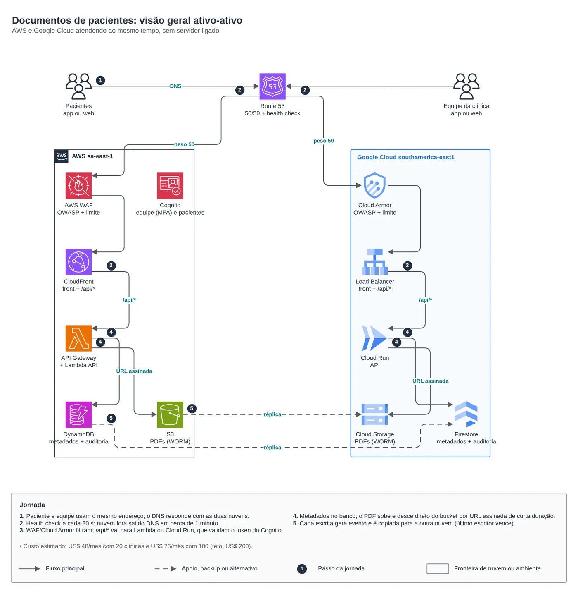
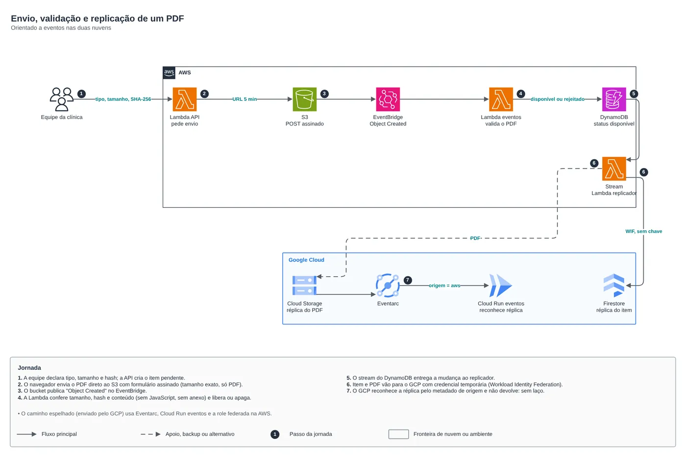
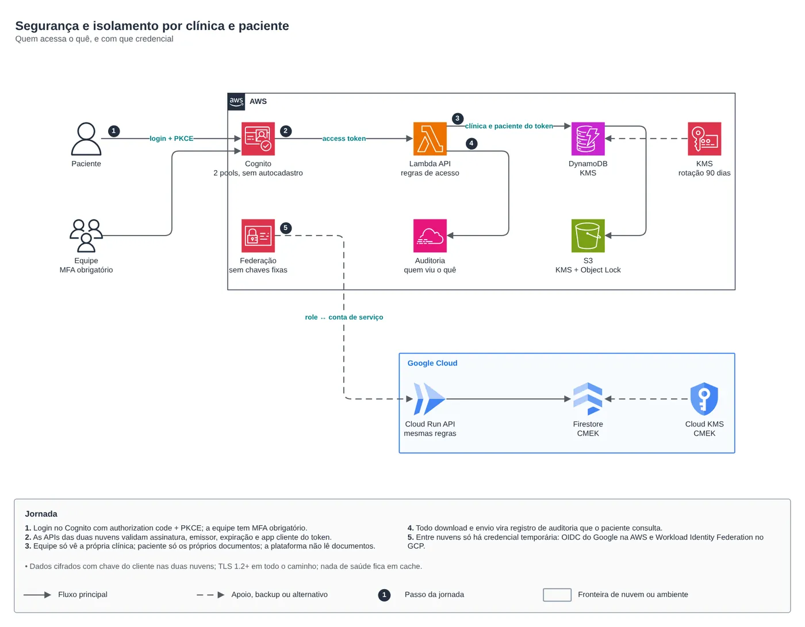

Multicloud · Desafio e solução
Documentos de pacientes ativo-ativo em AWS e Google Cloud
Desafio: exames, diagnósticos e receitas em PDF para 20 clínicas hoje e 3.000 amanhã, com segurança em primeiro lugar e teto de US$ 200 por mês. Solução: serverless e orientada a eventos, nas duas nuvens ao mesmo tempo.


01O problema
O pedido: clínicas guardam exames, diagnósticos e receitas em PDF, e cada paciente abre os seus no celular ou no navegador, a um clique. Hoje são 20 clínicas, e a meta é chegar a 3.000 sem reprovisionar nada. O viés principal é segurança: dado de saúde é dado pessoal sensível pela LGPD, cada clínica só pode ver o que é seu e cada paciente só os próprios documentos. A arquitetura tinha de ser distribuída, serverless e orientada a eventos, em AWS e Google Cloud, e o custo de nuvem não podia passar de US$ 200 por mês entre 20 e 100 clínicas.
02A solução
O mesmo endereço responde pelas duas nuvens: o Route 53 manda metade do tráfego para cada uma e tira do DNS, em cerca de 1 minuto, a que falhar no health check. Na AWS, CloudFront com WAF na frente de API Gateway, Lambda, DynamoDB e S3. No Google Cloud, Load Balancer com Cloud Armor na frente de Cloud Run, Firestore e Cloud Storage. Tudo escala a partir do zero, com dados em São Paulo nas duas nuvens. O PDF vai do navegador direto ao bucket por URL assinada; a chegada do arquivo dispara a validação, e DynamoDB Streams e Eventarc replicam cada gravação para a outra nuvem, com o último escritor vencendo. Entre as nuvens não há chave guardada: o GCP entra na AWS por OIDC do Google e a AWS entra no GCP por Workload Identity Federation. O login é único, no Cognito, com MFA obrigatório para a equipe.
O caminho de um documento
- A equipe da clínica pede o envio: o app grava o documento como pendente e devolve uma URL assinada de 5 minutos, que só aceita PDF do tamanho exato declarado.
- O navegador envia o PDF direto ao bucket da nuvem que atendeu. A API não trafega o arquivo, o que reduz custo e superfície de ataque.
- O evento de objeto criado (EventBridge na AWS, Eventarc no GCP) confere tamanho, SHA-256 e conteúdo, e barra PDF com JavaScript, ações de execução, arquivo embutido ou XFA.
- Aprovado, o documento fica disponível, e o registro e o arquivo são copiados para a outra nuvem, sem voltar para a origem.
- O paciente baixa por URL assinada de 60 segundos, e cada acesso vira um registro que ele mesmo consulta em "Quem acessou meus documentos" (LGPD, art. 18).
Decisões e o preço de cada uma
- Uma identidade só, no Cognito, porque senha não migra entre provedores. Se a região da AWS cair, quem já entrou segue até o token expirar, mas login novo para nesse período.
- Consistência eventual entre as nuvens, na casa dos segundos. O instante de gravação nunca anda para trás e a versão desempata duas gravações no mesmo milissegundo.
- Retenção de 20 anos para prontuário (Resolução CFM 1.821/2007), com S3 Object Lock e política de retenção no Cloud Storage, e chave própria nas duas nuvens.
- Um problema que só aparece olhando o desenho inteiro: a regra "só Brasil" do WAF e do Cloud Armor bloqueava o health check do Route 53, que sai dos EUA, e as duas nuvens seriam marcadas como fora do ar. O /api/health ficou isento da regra geográfica.


O código
module "app" {
source = "git::https://github.com/Raphaelfcs/automacao_terraform.git//aws/route53-health-routing?ref=main"
providers = { aws = aws.us_east_1 }
zone_id = var.zona_dns_id
record_name = var.dominio_app
endpoints = {
aws = {
weight = var.peso_aws
alias = { name = local.aws_app.cloudfront_dominio, zone_id = "Z2FDTNDATAQYW2" } # zona fixa de toda distribuição CloudFront
health_fqdn = local.aws_app.cloudfront_dominio
}
gcp = {
weight = var.peso_gcp
ips = [local.gcp_app.lb_ip]
health_fqdn = var.dominio_app
health_ip = local.gcp_app.lb_ip
}
}
alarm_topic_arn = module.alertas.topic_arns["alertas"]
tags = local.tags
}03Discussão
Módulos Terraform usados:
apps/docs-pacientesDocumentos de pacientes: app serverless ativo-ativo em AWS e Google Cloudaws/route53-health-routingDNS ativo-ativo entre nuvens com health checkaws/waf-web-aclAWS WAF com regras gerenciadas e limite por IPaws/dynamodb-tableDynamoDB on-demand com stream, PITR e KMSaws/iam-role-gcp-federationRole IAM para workloads do Google Cloud sem chaveaws/cognito-user-poolCognito como IdP OAuth2/OIDCgcp/serverless-edgeBorda global: LB HTTPS, Cloud Armor e CDNgcp/cloud-run-serviceCloud Run com conta de serviço própria e NEGgcp/firestore-databaseFirestore nativo com CMEK, PITR e backupsgcp/eventarc-triggerEventarc para Cloud Run privadogcp/workload-identity-awsWorkload Identity Federation AWS -> Google Cloud
FinOps: onde está o custo
| Componente | O que pesa | Alavanca |
|---|---|---|
gcp/serverless-edge + aws/waf-web-acl | Load Balancer global, Cloud Armor, WAF, chaves KMS e health checks: cerca de US$ 45 por mês, quase todo o custo até 100 clínicas. | É o preço fixo do ativo-ativo; computação e banco escalam a partir do zero. |
aws/cognito-user-pool | Com 3.000 clínicas (324 mil usuários ativos), o login vira 85% de um total estimado de US$ 5,6 mil por mês. | Tier Lite (cerca de US$ 1,7 mil a menos, com login em inglês), desconto por volume ou medir o uso real. |
apps/docs-pacientes/docs/custo.py | Total estimado: US$ 48 com 20 clínicas e US$ 75 com 100, abaixo do teto de US$ 200. | Premissas editáveis no topo do script: PDFs, downloads, pacientes e chamadas por clínica. |
Preços de tabela de novembro de 2026 para sa-east-1 e southamerica-east1, sem descontos; as premissas estão no script de custo.